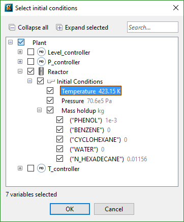

In order to specify the Process entity to use for the Parameter Estimation, click on the General tab in the Experiments Performed entity editor and then choose the desired Process from the drop down menu at the top of the window (see figure below) - you can select a Process Entity from the same project as that containing this Experiment entity or any projects cross-referenced by the project.1For backwards compatibility with ancient versions of gPROMS, it is valid for the Process field to remain blank. In this case, the Parameter Estimation or Experiment Design activities will look for a Process with the same name as the activity being run. However, if you do not set the Process field, assisted pathname completion will not work within this editor.
In some situations, initialisation is helped by specifying a Saved Variable Set. This can be done by choosing the desired Saved file from the drop down menu shown below, or it may be typed in manually.
Advanced notes:
A Saved variable set specified in the Performed Experiment will be applied in addition to specifications given in the PRESET section of the Process. Each entry of the Saved variable set file(s) specified in the Performed Experiment supersede any specification given in the Process.
gPROMS will also accept a path to a .gSTORE file located in the file system (as opposed to being embedded in the project).
Multiple files may be listed, separated using a comma.
Time units that apply to the entire experiment are specified on this tab as well, the available options are listed in a drop-down box.
You have the option to provide different initial conditions to those contained in the Process. An experiment can have steady-state or dynamic initial conditions. If you to choose steady-state initial conditions, then simply check the steady-state button in the Initial conditions section of the window. For dynamic initial conditions, check the dynamic button and enter information in the table underneath.
Use the Select... button to populate the table using a dialog-based choice which will only display variables that the model developer has chosen to be suitable for initial conditions. See the section on dialog-based variable choice in Model Validation.

Alternatively, type the full pathname of the gPROMS differential variable that you wish to specify an initial condition for in the <new> cell in the initial conditions table. You MUST only provide initial conditions for variables that are given initial values directly in the Process.
If you do not wish to type the pathname you can select the appropriate variable from a drop down list by holding the CTRL key down and hitting the SPACE button on your keyboard. The first time you do this, gPROMS will give you a list of relevant Units and Variables. Select the desired one and then repeat as necessary to drill down to the desired Variable.
The full pathname may be converted to a descriptive name in case the model interface has been configured accordingly. Depending on the chosen application preferences, it may not be possible to edit the table directly.
Give the initial guess and lower and upper bounds for the initial condition - gPROMS will determine the value of the initial condition between these bounds. If you want to fix the initial condition at a constant value then check the fixed box.